Compliance Operator Usage Guide
OpenShift 4 includes a powerful Compliance Operator that helps organizations monitor and enforce security compliance policies across the cluster. This operator implements industry-standard security benchmarks and provides mechanisms to assess your cluster’s compliance status and remediate issues.
While the Compliance Operator offers robust functionality, it can be challenging to use effectively due to its complex configuration requirements and the technical nature of compliance standards. This guide aims to simplify the process and provide clear instructions for implementing compliance scanning in your OpenShift environment.
Video Explanation:
Understanding the Compliance Operator Architecture (AIGC)
The Compliance Operator works with several custom resources that interact to provide a complete compliance solution:
- ProfileBundle: Contains compliance content from security standards (like CIS, NIST, STIG)
- Profile: Represents a specific security standard implementation (e.g., ocp4-cis)
- Rule: Individual compliance checks that are evaluated during scans
- Variable: Customizable parameters that can be adjusted to meet specific requirements
- ScanSetting: Defines how scans should be executed (schedule, storage, etc.)
- ScanSettingBinding: Links profiles to scan settings to create a compliance suite
- TailoredProfile: A customized version of a standard profile with specific rule or variable adjustments
When a scan runs, it creates runtime resources:
- ComplianceSuite: Collection of scans created from a ScanSettingBinding
- ComplianceScan: Individual scan execution for a specific profile
- ComplianceCheckResult: Results of individual rule evaluations (pass/fail)
- ComplianceRemediation: Auto-fix options for failed checks
The diagram below illustrates how these components interact:
graph TD
%% Main Component
CO[Compliance Operator]
%% Configuration Components - Vertical Layout
subgraph "Configuration Components"
direction TB
PB[ProfileBundle<br>Pre-defined compliance content] --> P[Profile<br>Security standard implementation]
P --> R[Rule<br>Individual compliance check]
P --> V[Variable<br>Customizable parameters]
V --> TP[TailoredProfile<br>Customized profile]
P --> TP
SS[ScanSetting<br>Scan configuration] --> SSB[ScanSettingBinding<br>Links profiles to settings]
end
%% Runtime Components - Vertical Layout
subgraph "Runtime Components"
direction TB
CS[ComplianceSuite<br>Collection of scans] --> CScan[ComplianceScan<br>Individual scan execution]
CScan --> CCR[ComplianceCheckResult<br>Pass/Fail results]
CCR --> CR[ComplianceRemediation<br>Auto-fix options]
end
%% Relationships - Configuration
CO --> PB
CO --> SS
%% Relationships - Binding
SSB --> P
SSB --> TP
SSB --> SS
%% Relationships - Runtime
SSB --> |"Creates"| CS
%% ProfileBundle Types - Vertical Layout
subgraph "ProfileBundle Types"
%% direction TB
PB1[rhcos4<br>Node compliance]
PB2[ocp4<br>Platform compliance]
%% PB1 -- invisible link --> PB2
%% style "invisible link" fill:none,stroke:none
end
PB --> PB1
PB --> PB2
%% ScanSetting Types - Vertical Layout
subgraph "ScanSetting Examples"
direction TB
SS1[default<br>Manual remediation]
SS2[default-auto-apply<br>Automatic remediation]
end
SS --> SS1
SS --> SS2
%% Workflow
User[User] --> |"Creates"| SSB
CR --> |"Can be applied to"| Cluster[OpenShift Cluster]
CCR --> |"Exported as"| Report[HTML Report]
%% Styling
classDef operator fill:#dae8fc,stroke:#6c8ebf,stroke-width:2px;
classDef config fill:#e1d5e7,stroke:#9673a6,stroke-width:1px;
classDef runtime fill:#d5e8d4,stroke:#82b366,stroke-width:1px;
classDef examples fill:#fff2cc,stroke:#d6b656,stroke-width:1px;
classDef user fill:#f8cecc,stroke:#b85450,stroke-width:1px;
class CO operator;
class PB,P,R,V,SS,SSB,TP config;
class CS,CScan,CCR,CR runtime;
class P1,P2,P3,P4,PB1,PB2,SS1,SS2 examples;
class User,Cluster,Report user;deploy compliance-operator
Select the compliance operator from the list of
available operators and click on it to deploy it.
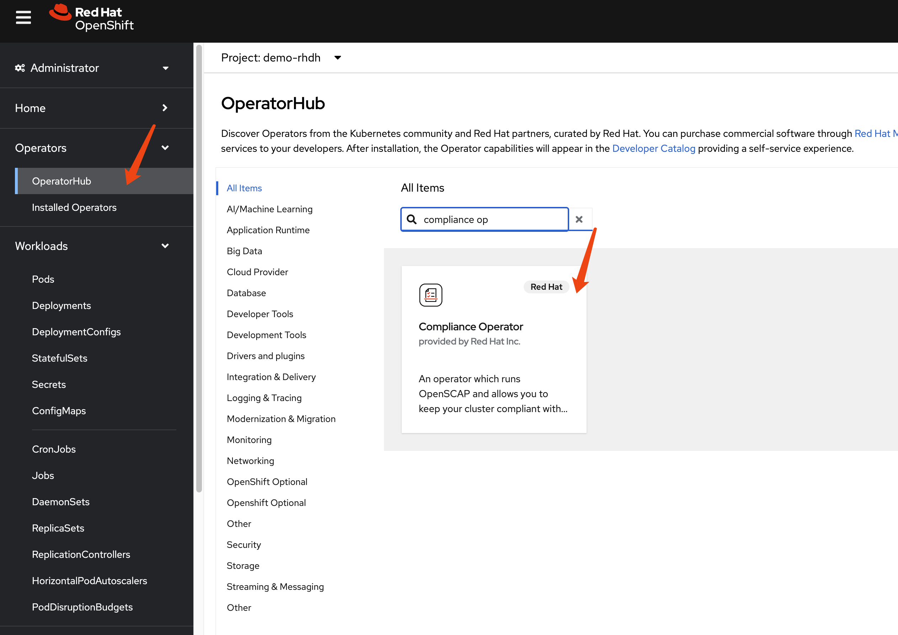
Accept the default settings and click on Install
to start the installation process.
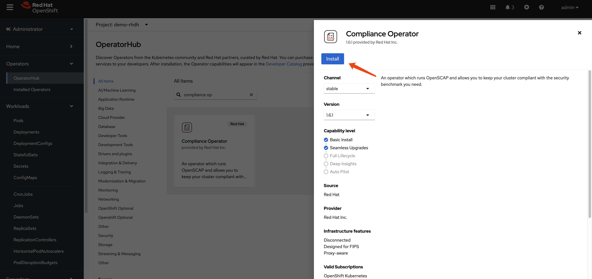
Continue with the installation until it is complete.
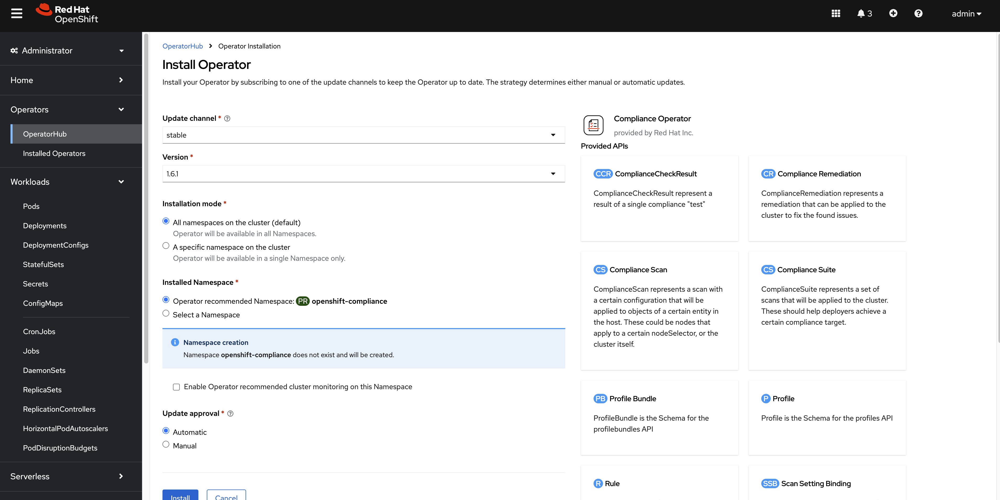
After the installation is complete, you can access the
operator dashboard. In the all instances section,
you can see a list of all the instances that have been deployed.
We filter out profile bundle and
scan setting, and we can see there are 2 instances
each of them deployed.
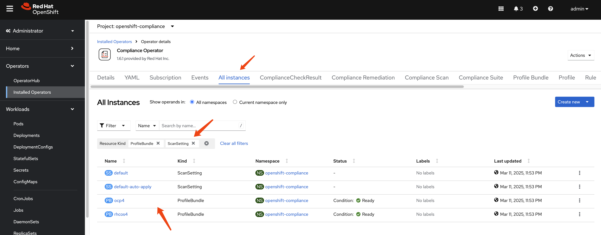
Understanding the Default ProfileBundles
The Compliance Operator automatically creates two ProfileBundles:
- rhcos4: Contains compliance content for Red Hat CoreOS nodes
- ocp4: Contains compliance content for the OpenShift Container Platform
Let’s examine the rhcos4 ProfileBundle:
apiVersion: compliance.openshift.io/v1alpha1
kind: ProfileBundle
metadata:
finalizers:
- profilebundle.finalizers.compliance.openshift.io
name: rhcos4
namespace: openshift-compliance
spec:
contentFile: ssg-rhcos4-ds.xml
contentImage: 'registry.redhat.io/compliance/openshift-compliance-content-rhel8@sha256:b286929357b82f8ff3845f535bab23382bf06f075ff2379063e2456f1a93e809'
status:
conditions:
- lastTransitionTime: '2025-03-11T15:54:42Z'
message: Profile bundle successfully parsed
reason: Valid
status: 'True'
type: Ready
dataStreamStatus: VALIDprofile bundle definition for
ocp4:
apiVersion: compliance.openshift.io/v1alpha1
kind: ProfileBundle
metadata:
finalizers:
- profilebundle.finalizers.compliance.openshift.io
name: ocp4
namespace: openshift-compliance
spec:
contentFile: ssg-ocp4-ds.xml
contentImage: 'registry.redhat.io/compliance/openshift-compliance-content-rhel8@sha256:b286929357b82f8ff3845f535bab23382bf06f075ff2379063e2456f1a93e809'
status:
conditions:
- lastTransitionTime: '2025-03-11T15:53:55Z'
message: Profile bundle successfully parsed
reason: Valid
status: 'True'
type: Ready
dataStreamStatus: VALIDUnderstanding the Default ScanSettings
The Compliance Operator creates two default ScanSettings:
- default: Configures scans with manual remediation (you must apply remediations yourself)
- default-auto-apply: Configures scans with automatic remediation (remediations are applied automatically)
Let’s examine the default ScanSetting:
timeout: 30m
strictNodeScan: true
metadata:
name: default
namespace: openshift-compliance
kind: ScanSetting
showNotApplicable: false
rawResultStorage:
nodeSelector:
node-role.kubernetes.io/master: ''
pvAccessModes:
- ReadWriteOnce
rotation: 3
size: 1Gi
tolerations:
- effect: NoSchedule
key: node-role.kubernetes.io/master
operator: Exists
- effect: NoExecute
key: node.kubernetes.io/not-ready
operator: Exists
tolerationSeconds: 300
- effect: NoExecute
key: node.kubernetes.io/unreachable
operator: Exists
tolerationSeconds: 300
- effect: NoSchedule
key: node.kubernetes.io/memory-pressure
operator: Exists
schedule: 0 1 * * *
suspend: false
roles:
- master
- worker
apiVersion: compliance.openshift.io/v1alpha1
maxRetryOnTimeout: 3
scanTolerations:
- operator: Existsscan setting definition for
default-auto-apply:
timeout: 30m
autoUpdateRemediations: true
strictNodeScan: true
autoApplyRemediations: true
metadata:
name: default-auto-apply
namespace: openshift-compliance
kind: ScanSetting
showNotApplicable: false
rawResultStorage:
nodeSelector:
node-role.kubernetes.io/master: ''
pvAccessModes:
- ReadWriteOnce
rotation: 3
size: 1Gi
tolerations:
- effect: NoSchedule
key: node-role.kubernetes.io/master
operator: Exists
- effect: NoExecute
key: node.kubernetes.io/not-ready
operator: Exists
tolerationSeconds: 300
- effect: NoExecute
key: node.kubernetes.io/unreachable
operator: Exists
tolerationSeconds: 300
- effect: NoSchedule
key: node.kubernetes.io/memory-pressure
operator: Exists
schedule: 0 1 * * *
suspend: false
roles:
- master
- worker
apiVersion: compliance.openshift.io/v1alpha1
maxRetryOnTimeout: 3
scanTolerations:
- operator: ExistsThere are many other kind of resources predefined.
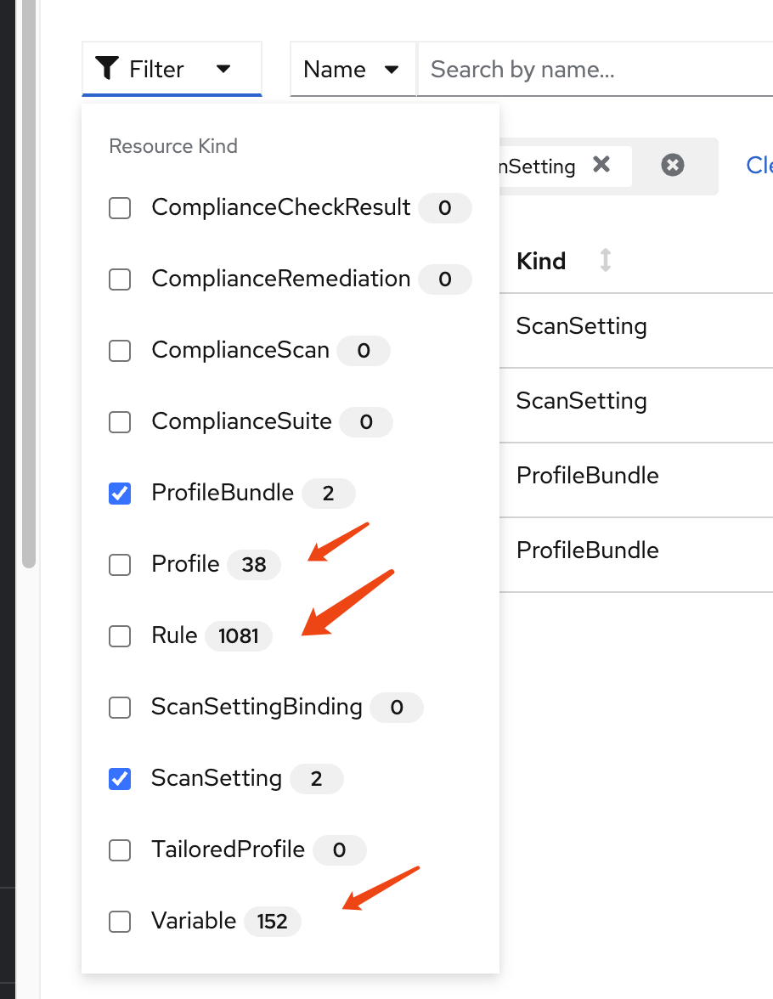
Understanding Compliance Profiles
The Compliance Operator provides numerous pre-defined profiles that implement various security standards. These profiles are categorized by:
- Standard type: CIS, NIST, PCI-DSS, STIG, etc.
- Target: Platform (ocp4-) or Node (rhcos4-)
- Security level: moderate, high, etc.
Let’s examine the available profiles:
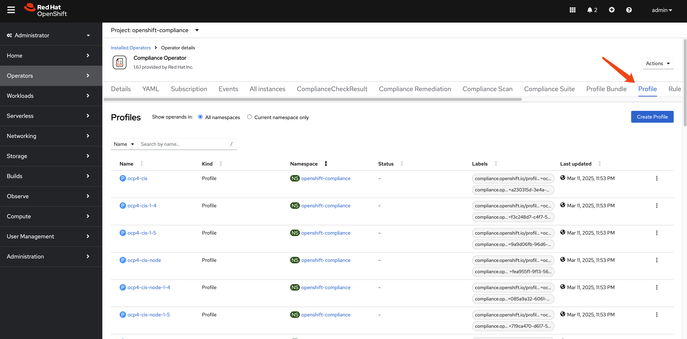
oc get Profile -A
# NAMESPACE NAME AGE VERSION
# openshift-compliance ocp4-cis 10h 1.5.0
# openshift-compliance ocp4-cis-1-4 10h 1.4.0
# openshift-compliance ocp4-cis-1-5 10h 1.5.0
# openshift-compliance ocp4-cis-node 10h 1.5.0
# openshift-compliance ocp4-cis-node-1-4 10h 1.4.0
# openshift-compliance ocp4-cis-node-1-5 10h 1.5.0
# openshift-compliance ocp4-e8 10h
# openshift-compliance ocp4-high 10h Revision 4
# openshift-compliance ocp4-high-node 10h Revision 4
# openshift-compliance ocp4-high-node-rev-4 10h Revision 4
# openshift-compliance ocp4-high-rev-4 10h Revision 4
# openshift-compliance ocp4-moderate 10h Revision 4
# openshift-compliance ocp4-moderate-node 10h Revision 4
# openshift-compliance ocp4-moderate-node-rev-4 10h Revision 4
# openshift-compliance ocp4-moderate-rev-4 10h Revision 4
# openshift-compliance ocp4-nerc-cip 10h
# openshift-compliance ocp4-nerc-cip-node 10h
# openshift-compliance ocp4-pci-dss 10h 3.2.1
# openshift-compliance ocp4-pci-dss-3-2 10h 3.2.1
# openshift-compliance ocp4-pci-dss-4-0 10h 4.0.0
# openshift-compliance ocp4-pci-dss-node 10h 3.2.1
# openshift-compliance ocp4-pci-dss-node-3-2 10h 3.2.1
# openshift-compliance ocp4-pci-dss-node-4-0 10h 4.0.0
# openshift-compliance ocp4-stig 10h V2R1
# openshift-compliance ocp4-stig-node 10h V2R1
# openshift-compliance ocp4-stig-node-v1r1 10h V1R1
# openshift-compliance ocp4-stig-node-v2r1 10h V2R1
# openshift-compliance ocp4-stig-v1r1 10h V1R1
# openshift-compliance ocp4-stig-v2r1 10h V2R1
# openshift-compliance rhcos4-e8 10h
# openshift-compliance rhcos4-high 10h Revision 4
# openshift-compliance rhcos4-high-rev-4 10h Revision 4
# openshift-compliance rhcos4-moderate 10h Revision 4
# openshift-compliance rhcos4-moderate-rev-4 10h Revision 4
# openshift-compliance rhcos4-nerc-cip 10h
# openshift-compliance rhcos4-stig 10h V2R1
# openshift-compliance rhcos4-stig-v1r1 10h V1R1
# openshift-compliance rhcos4-stig-v2r1 10h V2R1And the detail of an profile of ocp4-cis, we can
see it references to many rules.
apiVersion: compliance.openshift.io/v1alpha1
description: 'This profile defines a baseline that aligns to the Center for Internet Security® Red Hat OpenShift Container Platform 4 Benchmark™, V1.5. This profile includes Center for Internet Security® Red Hat OpenShift Container Platform 4 CIS Benchmarks™ content. Note that this part of the profile is meant to run on the Platform that Red Hat OpenShift Container Platform 4 runs on top of. This profile is applicable to OpenShift versions 4.12 and greater.'
id: xccdf_org.ssgproject.content_profile_cis
kind: Profile
metadata:
annotations:
compliance.openshift.io/image-digest: pb-ocp4m2njf
compliance.openshift.io/product: redhat_openshift_container_platform_4.1
compliance.openshift.io/product-type: Platform
name: ocp4-cis
namespace: openshift-compliance
labels:
compliance.openshift.io/profile-bundle: ocp4
compliance.openshift.io/profile-guid: a230315d-3e4a-5b58-b00f-f96f1553e036
rules:
- ocp4-accounts-restrict-service-account-tokens
- ocp4-accounts-unique-service-account
- ocp4-api-server-admission-control-plugin-alwaysadmit
- ocp4-api-server-admission-control-plugin-alwayspullimages
- ocp4-api-server-admission-control-plugin-namespacelifecycle
- ocp4-api-server-admission-control-plugin-noderestriction
- ocp4-api-server-admission-control-plugin-scc
- ocp4-api-server-admission-control-plugin-service-account
- ocp4-api-server-anonymous-auth
- ocp4-api-server-audit-log-maxbackup
- ocp4-api-server-audit-log-maxsize
- ocp4-api-server-audit-log-path
- ocp4-api-server-auth-mode-no-aa
- ocp4-api-server-auth-mode-rbac
- ocp4-api-server-basic-auth
- ocp4-api-server-bind-address
- ocp4-api-server-client-ca
- ocp4-api-server-encryption-provider-cipher
- ocp4-api-server-etcd-ca
- ocp4-api-server-etcd-cert
- ocp4-api-server-etcd-key
- ocp4-api-server-https-for-kubelet-conn
- ocp4-api-server-insecure-bind-address
- ocp4-api-server-kubelet-certificate-authority
- ocp4-api-server-kubelet-client-cert
- ocp4-api-server-kubelet-client-cert-pre-4-9
- ocp4-api-server-kubelet-client-key
- ocp4-api-server-kubelet-client-key-pre-4-9
- ocp4-api-server-oauth-https-serving-cert
- ocp4-api-server-openshift-https-serving-cert
- ocp4-api-server-profiling-protected-by-rbac
- ocp4-api-server-request-timeout
- ocp4-api-server-service-account-lookup
- ocp4-api-server-service-account-public-key
- ocp4-api-server-tls-cert
- ocp4-api-server-tls-cipher-suites
- ocp4-api-server-tls-private-key
- ocp4-api-server-token-auth
- ocp4-audit-log-forwarding-enabled
- ocp4-audit-log-forwarding-webhook
- ocp4-audit-logging-enabled
- ocp4-audit-profile-set
- ocp4-configure-network-policies
- ocp4-configure-network-policies-hypershift-hosted
- ocp4-configure-network-policies-namespaces
- ocp4-controller-insecure-port-disabled
- ocp4-controller-secure-port
- ocp4-controller-service-account-ca
- ocp4-controller-service-account-private-key
- ocp4-controller-use-service-account
- ocp4-etcd-auto-tls
- ocp4-etcd-cert-file
- ocp4-etcd-client-cert-auth
- ocp4-etcd-key-file
- ocp4-etcd-peer-auto-tls
- ocp4-etcd-peer-cert-file
- ocp4-etcd-peer-client-cert-auth
- ocp4-etcd-peer-key-file
- ocp4-file-groupowner-proxy-kubeconfig
- ocp4-file-owner-proxy-kubeconfig
- ocp4-file-permissions-proxy-kubeconfig
- ocp4-general-apply-scc
- ocp4-general-default-namespace-use
- ocp4-general-default-seccomp-profile
- ocp4-general-namespaces-in-use
- ocp4-idp-is-configured
- ocp4-kubeadmin-removed
- ocp4-kubelet-configure-tls-cert
- ocp4-kubelet-configure-tls-cipher-suites-ingresscontroller
- ocp4-kubelet-configure-tls-key
- ocp4-kubelet-disable-readonly-port
- ocp4-ocp-allowed-registries
- ocp4-ocp-allowed-registries-for-import
- ocp4-ocp-api-server-audit-log-maxbackup
- ocp4-ocp-api-server-audit-log-maxsize
- ocp4-ocp-insecure-allowed-registries-for-import
- ocp4-ocp-insecure-registries
- ocp4-openshift-api-server-audit-log-path
- ocp4-rbac-debug-role-protects-pprof
- ocp4-rbac-least-privilege
- ocp4-rbac-limit-cluster-admin
- ocp4-rbac-limit-secrets-access
- ocp4-rbac-pod-creation-access
- ocp4-rbac-wildcard-use
- ocp4-scc-drop-container-capabilities
- ocp4-scc-limit-container-allowed-capabilities
- ocp4-scc-limit-ipc-namespace
- ocp4-scc-limit-net-raw-capability
- ocp4-scc-limit-network-namespace
- ocp4-scc-limit-privilege-escalation
- ocp4-scc-limit-privileged-containers
- ocp4-scc-limit-process-id-namespace
- ocp4-scc-limit-root-containers
- ocp4-scheduler-profiling-protected-by-rbac
- ocp4-scheduler-service-protected-by-rbac
- ocp4-secrets-consider-external-storage
- ocp4-secrets-no-environment-variables
- ocp4-version-detect-in-hypershift
- ocp4-version-detect-in-ocp
title: CIS Red Hat OpenShift Container Platform 4 Benchmark
version: 1.5.0There are many rule predefined.
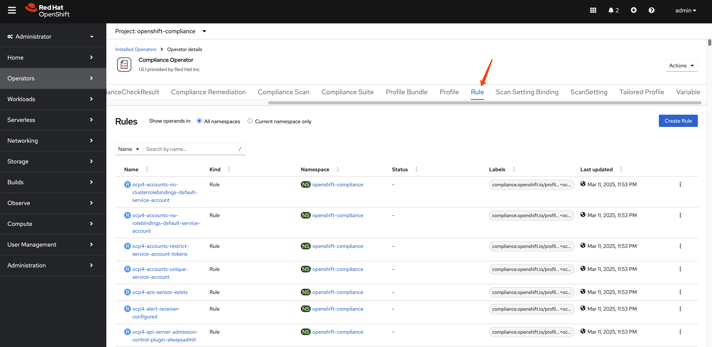
The total number of rule is around
1082.
oc get Rule -A | wc -l
# 1082Let’s see an example of rule:
ocp4-kubeadmin-removed
checkType: Platform
instructions: |-
To verify that the kubeadmin secret has been deleted, make sure
that oc get secrets kubeadmin -n kube-system
returns a NotFound error.
Is it the case that the kubeadmin secret has not been deleted?
metadata:
annotations:
policies.open-cluster-management.io/standards: 'NERC-CIP,NIST-800-53,PCI-DSS,STIG,CIS-OCP,PCI-DSS-4-0'
control.compliance.openshift.io/PCI-DSS-4-0: 2.2.1;2.2.2;2.2;8.2.2;8.2;8.3
compliance.openshift.io/profiles: 'ocp4-stig,ocp4-moderate-rev-4,ocp4-cis-1-5,ocp4-pci-dss,ocp4-cis,ocp4-stig-v1r1,ocp4-pci-dss-4-0,ocp4-nerc-cip,ocp4-pci-dss-3-2,ocp4-high,ocp4-stig-v2r1,ocp4-cis-1-4,ocp4-high-rev-4,ocp4-moderate'
control.compliance.openshift.io/CIS-OCP: 3.1.1;5.1.1
policies.open-cluster-management.io/controls: 'CIP-004-6 R2.2.2,CIP-004-6 R2.2.3,CIP-007-3 R.1.3,CIP-007-3 R2,CIP-007-3 R5,CIP-007-3 R5.1.1,CIP-007-3 R5.1.3,CIP-007-3 R5.2.1,CIP-007-3 R5.2.3,CIP-007-3 R6.1,CIP-007-3 R6.2,CIP-007-3 R6.3,CIP-007-3 R6.4,AC-2(2),AC-2(7),AC-2(9),AC-2(10),AC-12(1),IA-2(5),MA-4,SC-12(1),Req-2.1,SRG-APP-000023-CTR-000055,3.1.1,5.1.1,2.2.1,2.2.2,2.2,8.2.2,8.2,8.3,CNTR-OS-000030,CNTR-OS-000040,CNTR-OS-000440'
control.compliance.openshift.io/STIG: SRG-APP-000023-CTR-000055;CNTR-OS-000030;CNTR-OS-000040;CNTR-OS-000440
control.compliance.openshift.io/NIST-800-53: AC-2(2);AC-2(7);AC-2(9);AC-2(10);AC-12(1);IA-2(5);MA-4;SC-12(1)
control.compliance.openshift.io/NERC-CIP: CIP-004-6 R2.2.2;CIP-004-6 R2.2.3;CIP-007-3 R.1.3;CIP-007-3 R2;CIP-007-3 R5;CIP-007-3 R5.1.1;CIP-007-3 R5.1.3;CIP-007-3 R5.2.1;CIP-007-3 R5.2.3;CIP-007-3 R6.1;CIP-007-3 R6.2;CIP-007-3 R6.3;CIP-007-3 R6.4
compliance.openshift.io/image-digest: pb-ocp4m2njf
control.compliance.openshift.io/PCI-DSS: Req-2.1
compliance.openshift.io/rule: kubeadmin-removed
name: ocp4-kubeadmin-removed
namespace: openshift-compliance
ownerReferences:
- apiVersion: compliance.openshift.io/v1alpha1
blockOwnerDeletion: true
controller: true
kind: ProfileBundle
name: ocp4
uid: a7e06c24-12d2-4f21-97bd-a59b5d158f3b
labels:
compliance.openshift.io/profile-bundle: ocp4
kind: Rule
rationale: |-
The kubeadmin user has an auto-generated password and a self-signed certificate, and has effectively
cluster-admin
permissions; therefore, it's considered a security liability.
title: Ensure that the kubeadmin secret has been removed
id: xccdf_org.ssgproject.content_rule_kubeadmin_removed
description: |-
The kubeadmin user is meant to be a temporary user used for bootstrapping purposes. It is preferable to assign system administrators whose users are backed by an Identity Provider.
Make sure to remove the user as described in the documentation ( https://docs.openshift.com/container-platform/latest/authentication/remove-kubeadmin.html )
severity: medium
apiVersion: compliance.openshift.io/v1alpha1There are also many variables defined.
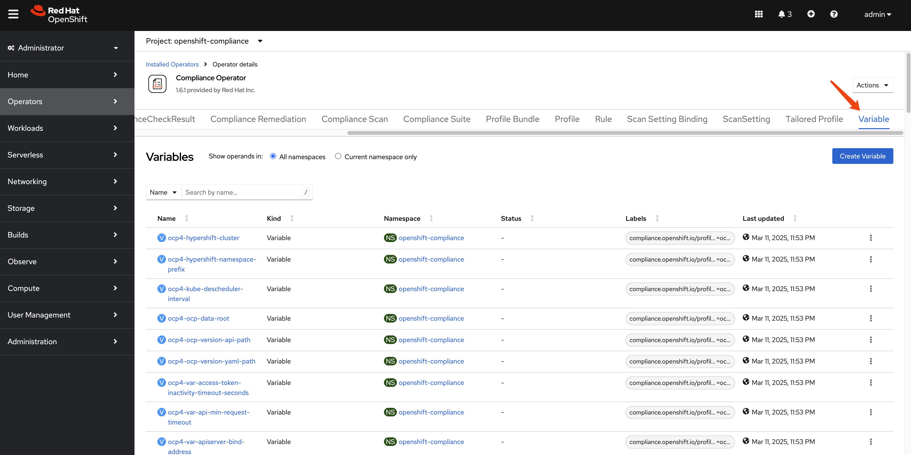
And the total number of variables is around 153.
oc get Variables -A | wc -l
# 153Let’s look at the Variables:
rhcos4-sshd-idle-timeout-value in detail. The
variables is used with
TailoredProfiles to customize the behavior of the
profile. For example, the
rhcos4-sshd-idle-timeout-value variable is used to
set the idle timeout for SSH connections on Red Hat Enterprise
Linux CoreOS (RHCOS) 4.
selections:
- description: 10_minutes
value: '600'
- description: 120_minutes
value: '7200'
- description: 14_minutes
value: '840'
- description: 15_minutes
value: '900'
- description: 30_minutes
value: '1800'
- description: 5_minutes
value: '300'
- description: 60_minutes
value: '3600'
metadata:
annotations:
compliance.openshift.io/image-digest: pb-rhcos4s7b7g
name: rhcos4-sshd-idle-timeout-value
namespace: openshift-compliance
ownerReferences:
- apiVersion: compliance.openshift.io/v1alpha1
blockOwnerDeletion: true
controller: true
kind: ProfileBundle
name: rhcos4
uid: 648c319d-7378-4474-9f0c-6f1a5f536bfb
labels:
compliance.openshift.io/profile-bundle: rhcos4
value: '300'
kind: Variable
title: SSH session Idle time
type: number
id: xccdf_org.ssgproject.content_value_sshd_idle_timeout_value
description: Specify duration of allowed idle time.
apiVersion: compliance.openshift.io/v1alpha1Running Compliance Scans
Now that we understand the components of the Compliance Operator, let’s run a scan to assess our cluster’s compliance status. The process involves creating a ScanSettingBinding that connects profiles to scan settings.
Creating a ScanSettingBinding
To run a scan, we need to create a ScanSettingBinding that specifies:
- Which profiles to scan against (in this case, we’ll use CIS benchmarks)
- Which scan settings to use (we’ll use the default settings for manual remediation)
Here’s an example ScanSettingBinding that will scan both the OpenShift platform and nodes against CIS benchmarks:
apiVersion: compliance.openshift.io/v1alpha1
kind: ScanSettingBinding
metadata:
name: cis-compliance
namespace: openshift-compliance
profiles:
- name: ocp4-cis-node
kind: Profile
apiGroup: compliance.openshift.io/v1alpha1
- name: ocp4-cis
kind: Profile
apiGroup: compliance.openshift.io/v1alpha1
settingsRef:
name: default
kind: ScanSetting
apiGroup: compliance.openshift.io/v1alpha1Navigate to scan setting binding section and
click on the Add Scan Setting Binding button.
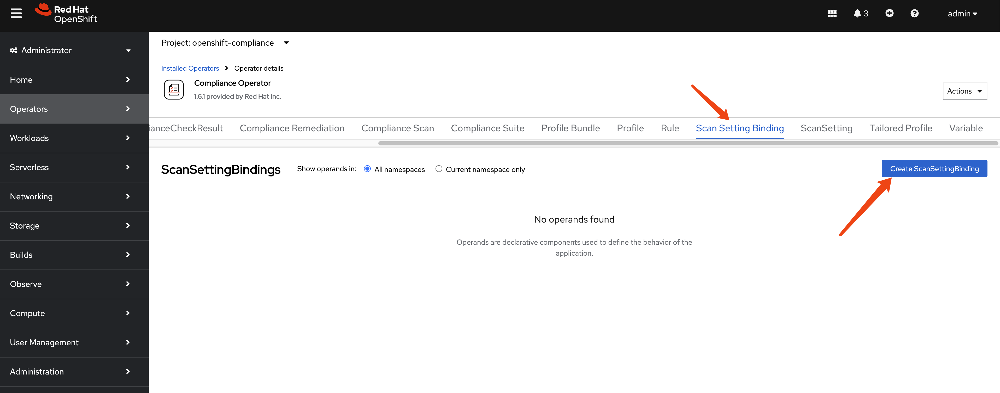
Past the example scan setting binding yaml
file.
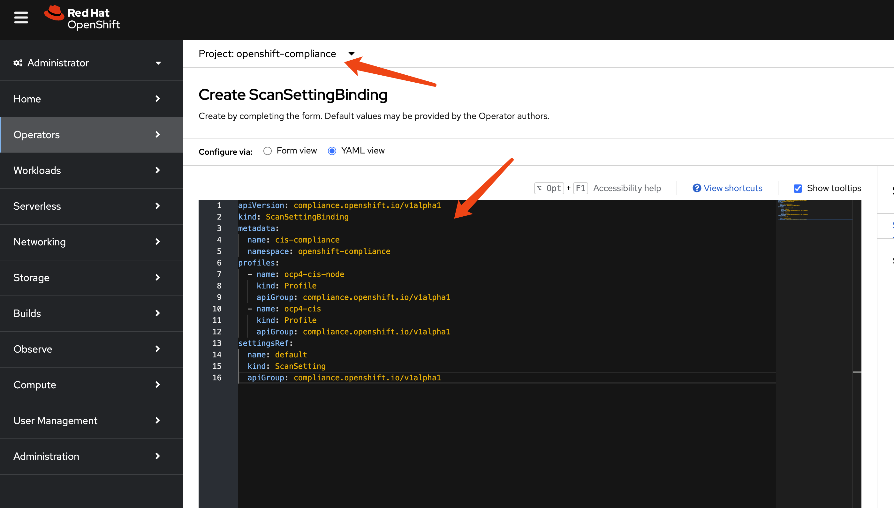
After the scan setting binding is created, we
can see there are many pods created to carry out the scan.
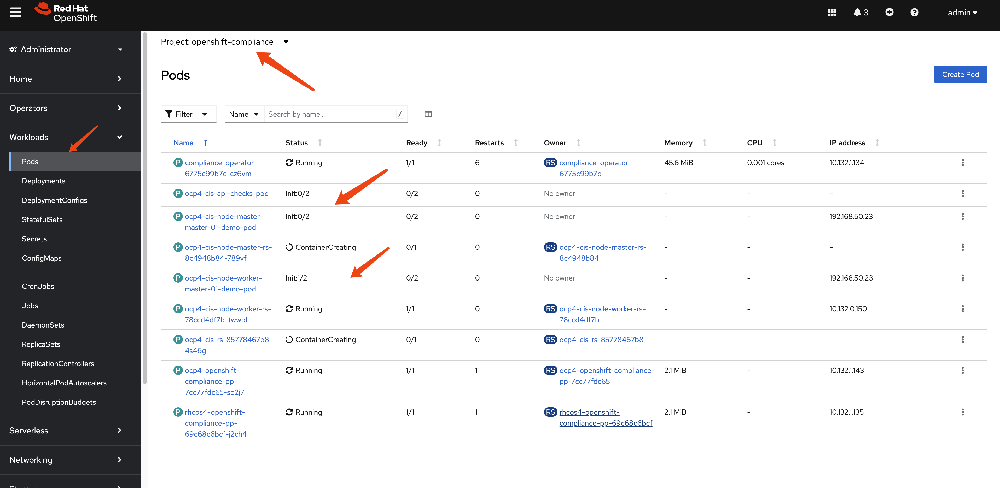
Understanding Scan Results
After creating the ScanSettingBinding, the Compliance Operator will:
- Create a ComplianceSuite resource
- Create ComplianceScan resources for each profile
- Deploy scan pods to evaluate compliance rules
- Store results as ComplianceCheckResult resources
- Generate ComplianceRemediation resources for failed checks
Wait a moment for the scan to complete. You’ll see the scan pods running and then completing:
Once complete, the results are created in the format of Custom Resources (CRs):
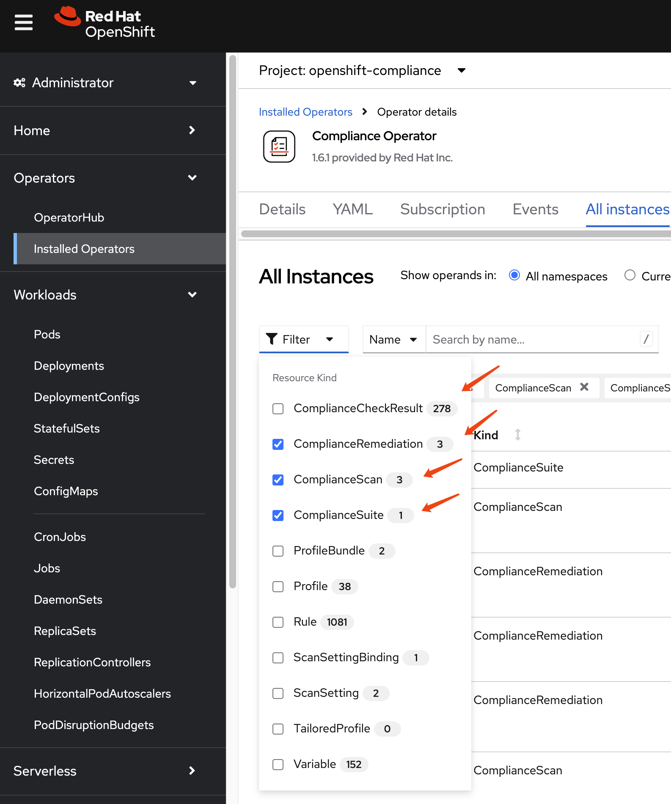
Let’s examine these results in detail by filtering for specific resource types:
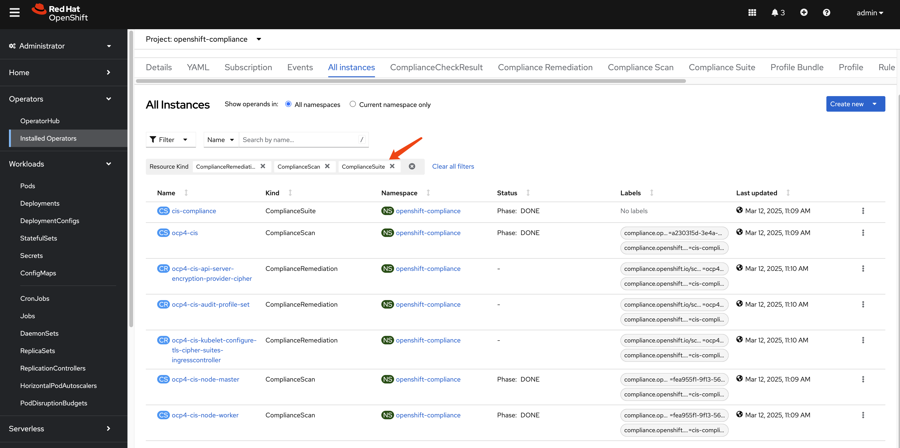
First is ComplianceSuite, it tells which nodes
are part of the scan and what kind of profile to use, and the
compliance scan result.
apiVersion: compliance.openshift.io/v1alpha1
kind: ComplianceSuite
metadata:
name: cis-compliance
namespace: openshift-compliance
ownerReferences:
- apiVersion: compliance.openshift.io/v1alpha1
blockOwnerDeletion: true
controller: true
kind: ScanSettingBinding
name: cis-compliance
uid: 34099038-7d08-4ed1-b981-95f8a67be73b
finalizers:
- suite.finalizers.compliance.openshift.io
spec:
scans:
- nodeSelector:
node-role.kubernetes.io/master: ''
timeout: 30m
contentImage: 'registry.redhat.io/compliance/openshift-compliance-content-rhel8@sha256:b286929357b82f8ff3845f535bab23382bf06f075ff2379063e2456f1a93e809'
strictNodeScan: true
profile: xccdf_org.ssgproject.content_profile_cis-node
name: ocp4-cis-node-master
showNotApplicable: false
rawResultStorage:
nodeSelector:
node-role.kubernetes.io/master: ''
pvAccessModes:
- ReadWriteOnce
rotation: 3
size: 1Gi
tolerations:
- effect: NoSchedule
key: node-role.kubernetes.io/master
operator: Exists
- effect: NoExecute
key: node.kubernetes.io/not-ready
operator: Exists
tolerationSeconds: 300
- effect: NoExecute
key: node.kubernetes.io/unreachable
operator: Exists
tolerationSeconds: 300
- effect: NoSchedule
key: node.kubernetes.io/memory-pressure
operator: Exists
scanType: Node
content: ssg-ocp4-ds.xml
maxRetryOnTimeout: 3
scanTolerations:
- operator: Exists
- nodeSelector:
node-role.kubernetes.io/worker: ''
timeout: 30m
contentImage: 'registry.redhat.io/compliance/openshift-compliance-content-rhel8@sha256:b286929357b82f8ff3845f535bab23382bf06f075ff2379063e2456f1a93e809'
strictNodeScan: true
profile: xccdf_org.ssgproject.content_profile_cis-node
name: ocp4-cis-node-worker
showNotApplicable: false
rawResultStorage:
nodeSelector:
node-role.kubernetes.io/master: ''
pvAccessModes:
- ReadWriteOnce
rotation: 3
size: 1Gi
tolerations:
- effect: NoSchedule
key: node-role.kubernetes.io/master
operator: Exists
- effect: NoExecute
key: node.kubernetes.io/not-ready
operator: Exists
tolerationSeconds: 300
- effect: NoExecute
key: node.kubernetes.io/unreachable
operator: Exists
tolerationSeconds: 300
- effect: NoSchedule
key: node.kubernetes.io/memory-pressure
operator: Exists
scanType: Node
content: ssg-ocp4-ds.xml
maxRetryOnTimeout: 3
scanTolerations:
- operator: Exists
- timeout: 30m
contentImage: 'registry.redhat.io/compliance/openshift-compliance-content-rhel8@sha256:b286929357b82f8ff3845f535bab23382bf06f075ff2379063e2456f1a93e809'
strictNodeScan: true
profile: xccdf_org.ssgproject.content_profile_cis
name: ocp4-cis
showNotApplicable: false
rawResultStorage:
nodeSelector:
node-role.kubernetes.io/master: ''
pvAccessModes:
- ReadWriteOnce
rotation: 3
size: 1Gi
tolerations:
- effect: NoSchedule
key: node-role.kubernetes.io/master
operator: Exists
- effect: NoExecute
key: node.kubernetes.io/not-ready
operator: Exists
tolerationSeconds: 300
- effect: NoExecute
key: node.kubernetes.io/unreachable
operator: Exists
tolerationSeconds: 300
- effect: NoSchedule
key: node.kubernetes.io/memory-pressure
operator: Exists
scanType: Platform
content: ssg-ocp4-ds.xml
maxRetryOnTimeout: 3
scanTolerations:
- operator: Exists
schedule: 0 1 * * *
suspend: false
status:
conditions:
- lastTransitionTime: '2025-03-12T03:10:44Z'
message: Compliance suite run is done running the scans
reason: NotRunning
status: 'False'
type: Processing
- lastTransitionTime: '2025-03-12T03:10:44Z'
message: Compliance suite run is done and has results
reason: Done
status: 'True'
type: Ready
phase: DONE
result: NON-COMPLIANT
scanStatuses:
- conditions:
- lastTransitionTime: '2025-03-12T03:10:44Z'
message: Compliance scan run is done running the scans
reason: NotRunning
status: 'False'
type: Processing
- lastTransitionTime: '2025-03-12T03:10:44Z'
message: Compliance scan run is done and has results
reason: Done
status: 'True'
type: Ready
endTimestamp: '2025-03-12T03:10:44Z'
name: ocp4-cis-node-master
phase: DONE
remainingRetries: 3
result: NON-COMPLIANT
resultsStorage:
name: ocp4-cis-node-master
namespace: openshift-compliance
startTimestamp: '2025-03-12T03:09:30Z'
- conditions:
- lastTransitionTime: '2025-03-12T03:10:44Z'
message: Compliance scan run is done running the scans
reason: NotRunning
status: 'False'
type: Processing
- lastTransitionTime: '2025-03-12T03:10:44Z'
message: Compliance scan run is done and has results
reason: Done
status: 'True'
type: Ready
endTimestamp: '2025-03-12T03:10:44Z'
name: ocp4-cis-node-worker
phase: DONE
remainingRetries: 3
result: NON-COMPLIANT
resultsStorage:
name: ocp4-cis-node-worker
namespace: openshift-compliance
startTimestamp: '2025-03-12T03:09:22Z'
- resultsStorage:
name: ocp4-cis
namespace: openshift-compliance
name: ocp4-cis
remainingRetries: 3
startTimestamp: '2025-03-12T03:09:22Z'
warnings: 'could not fetch /apis/apps/v1/namespaces/openshift-sdn/daemonsets/sdn: daemonsets.apps "sdn" not found'
conditions:
- lastTransitionTime: '2025-03-12T03:10:44Z'
message: Compliance scan run is done running the scans
reason: NotRunning
status: 'False'
type: Processing
- lastTransitionTime: '2025-03-12T03:10:44Z'
message: Compliance scan run is done and has results
reason: Done
status: 'True'
type: Ready
phase: DONE
endTimestamp: '2025-03-12T03:10:44Z'
result: NON-COMPLIANTAnd the ComplianceScan, it tells which profile
runs on what kind of nodes, and the compliance scan result.
apiVersion: compliance.openshift.io/v1alpha1
kind: ComplianceScan
metadata:
annotations:
compliance.openshift.io/check-count: '94'
resourceVersion: '20397087'
name: ocp4-cis-node-worker
namespace: openshift-compliance
ownerReferences:
- apiVersion: compliance.openshift.io/v1alpha1
blockOwnerDeletion: true
controller: true
kind: ComplianceSuite
name: cis-compliance
uid: 38e6939a-ac3f-4d9d-9c90-44dc3cb35632
finalizers:
- scan.finalizers.compliance.openshift.io
labels:
compliance.openshift.io/profile-guid: fea955f1-9f13-56fd-aacf-868b95b7283f
compliance.openshift.io/suite: cis-compliance
spec:
nodeSelector:
node-role.kubernetes.io/worker: ''
timeout: 30m
contentImage: 'registry.redhat.io/compliance/openshift-compliance-content-rhel8@sha256:b286929357b82f8ff3845f535bab23382bf06f075ff2379063e2456f1a93e809'
strictNodeScan: true
profile: xccdf_org.ssgproject.content_profile_cis-node
showNotApplicable: false
rawResultStorage:
nodeSelector:
node-role.kubernetes.io/master: ''
pvAccessModes:
- ReadWriteOnce
rotation: 3
size: 1Gi
tolerations:
- effect: NoSchedule
key: node-role.kubernetes.io/master
operator: Exists
- effect: NoExecute
key: node.kubernetes.io/not-ready
operator: Exists
tolerationSeconds: 300
- effect: NoExecute
key: node.kubernetes.io/unreachable
operator: Exists
tolerationSeconds: 300
- effect: NoSchedule
key: node.kubernetes.io/memory-pressure
operator: Exists
scanType: Node
content: ssg-ocp4-ds.xml
maxRetryOnTimeout: 3
scanTolerations:
- operator: Exists
status:
conditions:
- lastTransitionTime: '2025-03-12T03:10:44Z'
message: Compliance scan run is done running the scans
reason: NotRunning
status: 'False'
type: Processing
- lastTransitionTime: '2025-03-12T03:10:44Z'
message: Compliance scan run is done and has results
reason: Done
status: 'True'
type: Ready
endTimestamp: '2025-03-12T03:10:44Z'
phase: DONE
remainingRetries: 3
result: NON-COMPLIANT
resultsStorage:
name: ocp4-cis-node-worker
namespace: openshift-compliance
startTimestamp: '2025-03-12T03:09:22Z'There are many ComplianceCheckResult after a
compliance scan.
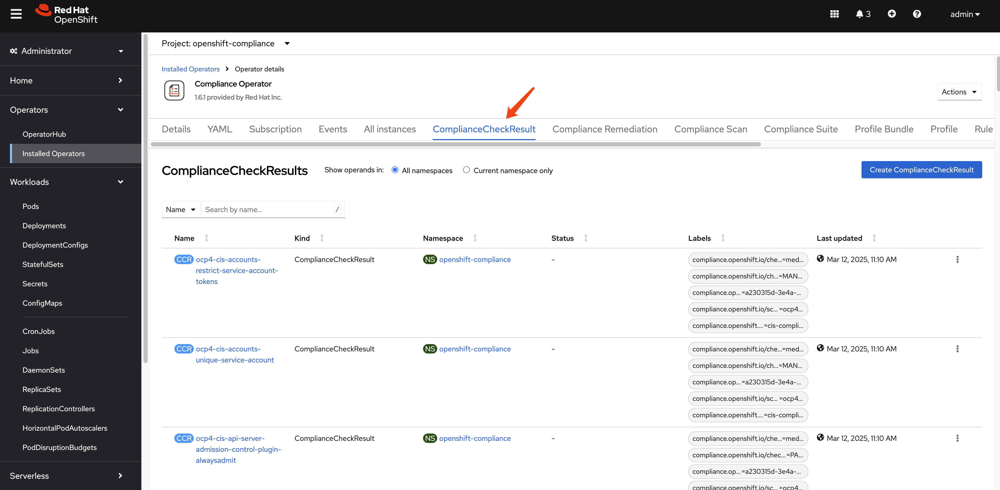
In our compliance run, there are around 279.
oc get ComplianceCheckResult -A | wc -l
# 279This example ComplianceCheckResult object
contains information about the compliance check results for a
specific compliance profile item.
instructions: |-
To verify that the kubeadmin secret has been deleted, make sure
that oc get secrets kubeadmin -n kube-system
returns a NotFound error.
Is it the case that the kubeadmin secret has not been deleted?
metadata:
annotations:
compliance.openshift.io/last-scanned-timestamp: '2025-03-12T03:09:22Z'
compliance.openshift.io/rule: kubeadmin-removed
resourceVersion: '20396818'
name: ocp4-cis-kubeadmin-removed
namespace: openshift-compliance
ownerReferences:
- apiVersion: compliance.openshift.io/v1alpha1
blockOwnerDeletion: true
controller: true
kind: ComplianceScan
name: ocp4-cis
uid: fd80670b-0782-4c11-ab04-42bd72a7dc54
labels:
compliance.openshift.io/check-severity: medium
compliance.openshift.io/check-status: FAIL
compliance.openshift.io/profile-guid: a230315d-3e4a-5b58-b00f-f96f1553e036
compliance.openshift.io/scan-name: ocp4-cis
compliance.openshift.io/suite: cis-compliance
status: FAIL
kind: ComplianceCheckResult
rationale: |-
The kubeadmin user has an auto-generated password and a self-signed certificate, and has effectively
cluster-admin
permissions; therefore, it's considered a security liability.
id: xccdf_org.ssgproject.content_rule_kubeadmin_removed
description: |-
Ensure that the kubeadmin secret has been removed
The kubeadmin user is meant to be a temporary user used for bootstrapping purposes. It is preferable to assign system administrators whose users are backed by an Identity Provider.
Make sure to remove the user as described in the documentation ( https://docs.openshift.com/container-platform/latest/authentication/remove-kubeadmin.html )
severity: medium
apiVersion: compliance.openshift.io/v1alpha1The ComplianceRemediation resource is used to
define the remediation actions that should be taken when a
compliance check fails.
apiVersion: compliance.openshift.io/v1alpha1
kind: ComplianceRemediation
metadata:
annotations:
compliance.openshift.io/xccdf-value-used: var-openshift-audit-profile
resourceVersion: '20396576'
name: ocp4-cis-audit-profile-set
namespace: openshift-compliance
ownerReferences:
- apiVersion: compliance.openshift.io/v1alpha1
blockOwnerDeletion: true
controller: true
kind: ComplianceCheckResult
name: ocp4-cis-audit-profile-set
uid: 59e647ba-8612-46b2-8864-42b3dd9c9fcc
labels:
compliance.openshift.io/scan-name: ocp4-cis
compliance.openshift.io/suite: cis-compliance
spec:
apply: false
current:
object:
apiVersion: config.openshift.io/v1
kind: APIServer
metadata:
name: cluster
spec:
audit:
profile: WriteRequestBodies
outdated: {}
type: Configuration
status:
applicationState: NotAppliedThere are 3 compliance remediations generated.
oc get ComplianceRemediation -A
# NAMESPACE NAME STATE
# openshift-compliance ocp4-cis-api-server-encryption-provider-cipher NotApplied
# openshift-compliance ocp4-cis-audit-profile-set NotApplied
# openshift-compliance ocp4-cis-kubelet-configure-tls-cipher-suites-ingresscontroller NotAppliedGenerating Human-Readable Reports
While you can examine compliance results using the Kubernetes API and custom resources, it’s often more convenient to generate human-readable HTML reports for analysis and documentation purposes.
Extracting and Converting Scan Results
First, let’s check the PVC name that contains the report raw data.
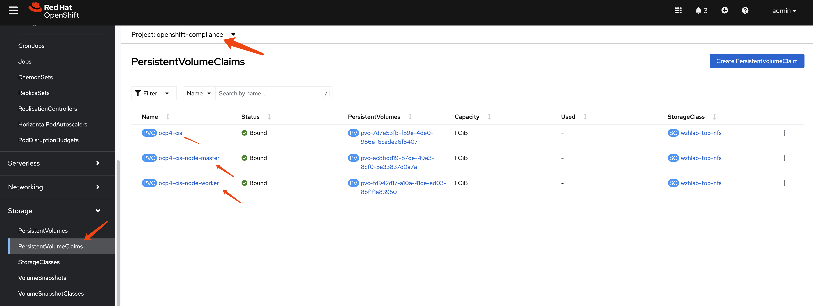
Next, we define a pod to extract data from the PV. We run this pod in privileged mode to grant it access to the PV due to backend storage limitations. If your storage solution permits, remove the privileged mode.
apiVersion: "v1"
kind: Pod
metadata:
name: pv-extract
spec:
# securityContext:
# runAsNonRoot: true
# seccompProfile:
# type: RuntimeDefault
containers:
- name: pv-extract-pod
image: registry.access.redhat.com/ubi9/ubi
command: ["sleep", "3000"]
volumeMounts:
- mountPath: "/workers-scan-results"
name: workers-scan-vol
securityContext:
privileged: true
# allowPrivilegeEscalation: true
# allowPrivilegeEscalation: false
# capabilities:
# drop: [ALL]
volumes:
- name: workers-scan-vol
persistentVolumeClaim:
claimName: ocp4-cis-node-masterYou can create the pod easily using the webUI as follows:
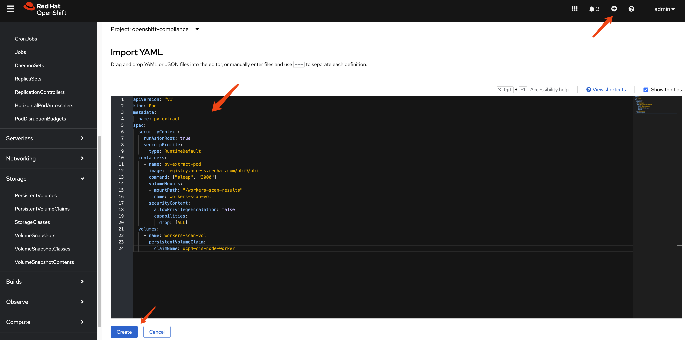
On bastation machine, you can copy the files from the pod using the following command:
oc cp pv-extract:/workers-scan-results -n openshift-compliance .On a rhel machine, copy the report raw data from bastation to local rhel machine, then you can use the following command to convert the bzip2 file into report html.
# get command oscap
dnf install -y openscap-scan
# in the directory where you have the report.xml.bz2 file
cat << 'EOF' > report.sh
#!/bin/bash
# Ensure that openscap is installed
if ! command -v oscap &> /dev/null; then
echo "Please install openscap first."
exit 1
fi
# Loop through all .xml.bzip2 files in the current directory
find . -maxdepth 1 -name "*.xml.bzip2" -print0 | while IFS= read -r -d $'\0' file; do
# Get the filename (without extension)
filename=$(basename "$file" .xml.bzip2)
# Generate a unique output filename
output_file="report_${filename}_$(date +%s).html"
# Execute the oscap command to generate the report
oscap xccdf generate report --output "$output_file" "$file"
# Check if the command was executed successfully
if [ $? -eq 0 ]; then
echo "Generated report for $file: $output_file"
else
echo "Error generating report for $file."
fi
done
echo "Processing complete."
EOF
bash report.sh
# Generated report for ./openscap-pod-19994a9a1de267c235b347b8a6e1502b13ad99c0.xml.bzip2: report_openscap-pod-19994a9a1de267c235b347b8a6e1502b13ad99c0_1741357399.html
# Generated report for ./openscap-pod-fd1520f0f9f45782bb20d55a348df304b6449965.xml.bzip2: report_openscap-pod-fd1520f0f9f45782bb20d55a348df304b6449965_1741357400.html
# Generated report for ./openscap-pod-e25e31adc70c84fd0f2bc355e5d0221b8c655a58.xml.bzip2: report_openscap-pod-e25e31adc70c84fd0f2bc355e5d0221b8c655a58_1741357401.html
# Generated report for ./openscap-pod-3baa2cb68109d2d1f3b6c3421be4b7e20c344692.xml.bzip2: report_openscap-pod-3baa2cb68109d2d1f3b6c3421be4b7e20c344692_1741357401.html
# Processing complete.Here are some sample report attached in this repo, you can check it out by download the html files and open them locally.
Remediating Compliance Issues (AIGC)
After running a compliance scan and reviewing the results, you’ll likely need to address any non-compliant items. The Compliance Operator provides mechanisms to help remediate these issues.
Understanding Remediations
For each failed check, the Compliance Operator may generate a
ComplianceRemediation resource that contains the
necessary configuration to fix the issue. These remediations can
be applied manually or automatically.
Manual Remediation
When using the default ScanSetting, remediations
are not applied automatically. You can review and apply them
manually:
List available remediations:
oc get ComplianceRemediation -n openshift-complianceReview a specific remediation:
oc get ComplianceRemediation <remediation-name> -n openshift-compliance -o yamlApply a remediation by setting
spec.applytotrue:oc patch ComplianceRemediation <remediation-name> \ --type merge \ -p '{"spec":{"apply":true}}' \ -n openshift-compliance
Automatic Remediation
If you want remediations to be applied automatically, use the
default-auto-apply ScanSetting when creating your
ScanSettingBinding:
apiVersion: compliance.openshift.io/v1alpha1
kind: ScanSettingBinding
metadata:
name: auto-apply-compliance
namespace: openshift-compliance
profiles:
- name: ocp4-cis
kind: Profile
apiGroup: compliance.openshift.io/v1alpha1
settingsRef:
name: default-auto-apply
kind: ScanSetting
apiGroup: compliance.openshift.io/v1alpha1Best Practices for Compliance Management
Start with a baseline scan: Begin with a standard profile like
ocp4-cisto establish a baseline compliance status.Create TailoredProfiles for customization: If the standard profiles don’t meet your exact needs, create TailoredProfiles to customize which rules are included and how variables are set.
Schedule regular scans: Use the
schedulefield in ScanSettings to run scans on a regular basis (e.g., daily or weekly).Implement a remediation strategy: Decide whether to use automatic or manual remediation based on your organization’s change management policies.
Document exceptions: For rules that cannot be remediated due to business requirements, document the exceptions and the compensating controls.
Generate and archive reports: Regularly generate HTML reports and archive them for audit purposes.
Monitor for drift: After achieving compliance, continue scanning to detect any drift from the compliant state.
Test remediations in non-production first: Before applying remediations in production, test them in a non-production environment to ensure they don’t cause unintended consequences.
Conclusion (AIGC)
The Compliance Operator is a powerful tool for ensuring your OpenShift cluster meets security standards and compliance requirements. By understanding its components and workflow, you can effectively scan, report on, and remediate compliance issues in your environment.